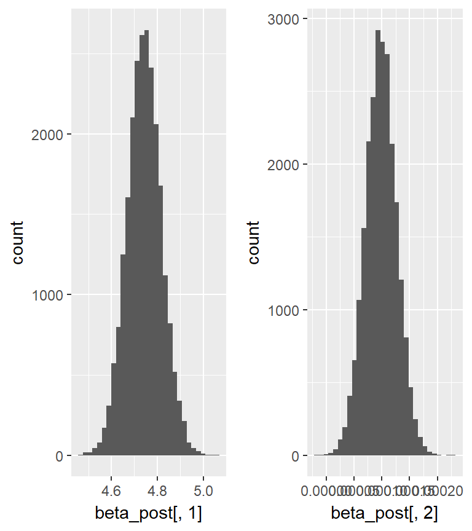

- We recognize a set of measurements and we want to make predictions or quantify relationships between outcome variable and predictors
- For the outcome variable we define a likelihood distribution that defines the plausability of individual observations
- in linear regressione, the distribution is always Gaussian
- We relate the the mean of likelihood distribution to a linear
Why linear regression
A simple motivating example: Plasma dataset
load('data\\plasma.RData')
Observational studies have suggested that low dietary intake or low plasma concentrations of retinol, beta-carotene, or other carotenoids might be associated with increased risk of developing certain types of cancer.
A cross-sectional study has been designed to investigate the relationship between personal characteristics and dietary factors, plasma concentrations of retinol, beta-carotene and other carotenoids.
Study subjects (N = 315) were patients who had an elective surgical procedure during a three-year period to biopsy or remove a lesion of the lung, colon, breast, skin, ovary or uterus that was found to be non-cancerous. We display the data for only two of the analytes.
A simple motivating example: Plasma dataset

A simple frequentist model
library(arm) mod_f <- lm(log(betaplasma) ~ betadiet, data = plasma, subset=betaplasma>0) arm::display(mod_f)
## lm(formula = log(betaplasma) ~ betadiet, data = plasma, subset = betaplasma > ## 0) ## coef.est coef.se ## (Intercept) 4.74 0.07 ## betadiet 0.00 0.00 ## --- ## n = 314, k = 2 ## residual sd = 0.73, R-Squared = 0.04
confint(mod_f)
## 2.5 % 97.5 % ## (Intercept) 4.597566e+00 4.8898808606 ## betadiet 4.318321e-05 0.0001539765
A simple Bayesian model
\[ Y_i \sim \textrm{Normal}(\beta\times X_i, \sigma) \]
mod_f <- lm(log(betaplasma) ~ betadiet, data = plasma, subset=betaplasma>0)
simple_bayesian_lm <- sim(mod_f, n.sims = 1000)
cat('Credible intervals for the model parameters:\n')
## Credible intervals for the model parameters:
apply(coef(simple_bayesian_lm), 2, quantile, prob = c(0.025, 0.975))
## (Intercept) betadiet ## 2.5% 4.603692 4.448904e-05 ## 97.5% 4.892252 1.574685e-04
A simple Bayesian model
cat('\nCredible interval for the estimated residual standard deviation:\n')
## ## Credible interval for the estimated residual standard deviation:
quantile(simple_bayesian_lm@sigma, prob = c(0.025, 0.975))
## 2.5% 97.5% ## 0.6826706 0.7943013
A simple Bayesian model
- Bayesian methods get a posterior probability for specific hypotheses:
- the slope parameter is greater than 0?
- the slope parameter is greater than 0.001?
## Probability the slope parameter is > 0: 0.999
## Probability the slope parameter is > 0.0001: 0.493
Plot the effect of X on Y

Predictive distribution
- We can get a sample of random draws from the posterior predictive distribution \[
y^*\vert\beta,\sigma^2,X \sim \textrm{Normal}(X\beta, \sigma^2)
\] using the simulated joint posterior distributions of the model parameters
- it allows for taking the uncertainty of the parameter estimates
- A new value \(y^*\) is drawn from the posterior distribution \(\textrm{Normal}(X\beta, \sigma^2)\) for each simulated set of model parameters
- 2.5% and 97.5% quantiles of the predictive distribution can be visualize for each x value
Predictive distribution

Predictive distribution
- Future observations are expected to be within the interval defined by the dashed lines in with a probability of 95%
- Increasing sample size will not give a narrower, but a more precise predictive distribution
- once we have a simulated sample of the posterior predictive distribution, we can give an estimate for the proportion of observations greater than any relevant thresholds
## Probability a future observation with x = 5000 is higher than 5:
sum(newy[newdat$x==5000,]>5)/1000
## [1] 0.607
What does sim do?
- In the Bayesian framework we are interested in the joint posterior distribution of \(\mathbf{\beta} = (\beta_0, \beta_1)\) and the residual variance \(\sigma^2\)
\[ P(\mathbf{\beta}, \sigma^2 \vert \mathbf{y, X}) = P(\mathbf{\beta}\vert \sigma^2 \mathbf{y, X}) \times P( \sigma^2 \vert \mathbf{y, X}) \] - The conditional posterior distribution \(P(\mathbf{\beta}\vert, \sigma^2 \mathbf{y, X})\) of \(\mathbf\beta\) is the posterior distribution of \(\mathbf\beta\) given a specific value of \(\sigma^2\)
- sim simulates 1000 values from the joint posterior distribution of the three model parameters:
- draws a random value from the marginal posterior distribution \(\sigma^2\)
- draws random values from the conditional posterior distribution for \(\mathbf\beta\)
What does sim do?
\[ P(\mathbf{\beta}, \sigma^2 \vert \mathbf{y, X}) = P(\mathbf{\beta}\vert \sigma^2 \mathbf{y, X}) \times P( \sigma^2 \vert \mathbf{y, X}) \]
- \(P(\mathbf{\beta}\vert \sigma^2 \mathbf{y, X})\) can be analytically derived
- with flat prior distributions it is uni(or multi)–variate Normal distribution \(\textrm{Normal}(\mathbf\beta), V_\beta\sigma^2)\)
- For models with the normal error distribution, estimates for \(\mathbf\beta\) equal ML estimates
What does sim do?
- The marginal posterior distribution of \(\sigma^2\) is independent of specific values of \(\mathbf\beta\)
- with flat prior distributions it is an inverse \(\chi^2\) distribution \(P( \sigma^2 \vert \mathbf{y, X}) = \textrm{Inv-}\chi^2(n-k,s )\)
- The marginal posterior distribution of \(\mathbf\beta\) can be obtained by integrating the conditional posterior distribution \(P(\mathbf{\beta}\vert \sigma^2 \mathbf{y, X}) = \textrm{Normal}(\mathbf\beta), V_\beta\sigma^2)\) over the distribution of \(\sigma^2\)
- it results in a uni-multivariate \(t\)-distribution.
What does sim do?
sim uses improper priors: \[ \begin{align} p(\beta) & \propto 1\\ p(\sigma^2) &\propto 1/\sigma^2 \\ \end{align} \] - These priors are called improper because they are not proper probability distribution since their density function do not integrate to 1
- \(p(\beta)\) is a uniform distribution (a horizontal line at 1)
- \(p(\sigma^2) \propto 1/\sigma^2\) is equivalent to uniform distribution on \(\log\sigma\)
Describing the model

A language for describing the model
\[ \begin{align} \textrm{outcome}_i &\sim \textrm{Normal}(\mu_i, \sigma)\\ \mu_i & = \beta\times\textrm{predictor}_i\\ \beta &\sim \textrm{Normal}(0, 10)\\ \sigma & \sim \textrm{HalfCauchy}(0,1) \end{align} \] - \(\beta\) and \(\sigma\) have now proper, weakly informative priors
Stan: specify the data
Do you remember? - Important annoying fact #1: STAN needs data as a list not a dataframe - specify data as well as meta data (i.e. the number of groups)
plasma_g0 <- subset(plasma, betaplasma>0)
plasma_dat <- list(N = 314 , #specify number of observations as a scalar
log_betaplasma = log(plasma_g0$betaplasma), # data vector
betadiet = plasma_g0$betadiet # data vector (predictor)
)
Stan: write your code
model_string <- 'data {
// First we declare all of our variables in the data block
int<lower=0> N;// Number of observations
vector[N] log_betaplasma; //Specify the outcome as a vector
vector[N] betadiet; //Specify the covariate as a vector
}
parameters {
vector[2] beta; // Betas are a vector of length 2 (intercept and slope)
real<lower=0> sigma; //error parameter
}
model {
//Priors
beta[1] ~ normal(0, 10); //intercept
beta[2] ~ normal(0, 5); //slope
sigma ~ cauchy(0, 5); //error
log_betaplasma ~ normal(beta[1] + beta[2] * betadiet, sigma);
}'
Compile the model
library(rstan) stanDso <- stan_model( model_code = model_string )
Sample from the posterior distribution
stanFit <- sampling(object = stanDso,
data = plasma_dat,
chains = 3, iter = 9000, warmup = 1000, thin = 1)
## ## SAMPLING FOR MODEL '6d1e9472ad354e035c2076250494e255' NOW (CHAIN 1). ## ## Gradient evaluation took 0 seconds ## 1000 transitions using 10 leapfrog steps per transition would take 0 seconds. ## Adjust your expectations accordingly! ## ## ## Iteration: 1 / 9000 [ 0%] (Warmup) ## Iteration: 900 / 9000 [ 10%] (Warmup) ## Iteration: 1001 / 9000 [ 11%] (Sampling) ## Iteration: 1900 / 9000 [ 21%] (Sampling) ## Iteration: 2800 / 9000 [ 31%] (Sampling) ## Iteration: 3700 / 9000 [ 41%] (Sampling) ## Iteration: 4600 / 9000 [ 51%] (Sampling) ## Iteration: 5500 / 9000 [ 61%] (Sampling) ## Iteration: 6400 / 9000 [ 71%] (Sampling) ## Iteration: 7300 / 9000 [ 81%] (Sampling) ## Iteration: 8200 / 9000 [ 91%] (Sampling) ## Iteration: 9000 / 9000 [100%] (Sampling) ## ## Elapsed Time: 4.624 seconds (Warm-up) ## 41.329 seconds (Sampling) ## 45.953 seconds (Total) ## ## ## SAMPLING FOR MODEL '6d1e9472ad354e035c2076250494e255' NOW (CHAIN 2). ## ## Gradient evaluation took 0 seconds ## 1000 transitions using 10 leapfrog steps per transition would take 0 seconds. ## Adjust your expectations accordingly! ## ## ## Iteration: 1 / 9000 [ 0%] (Warmup) ## Iteration: 900 / 9000 [ 10%] (Warmup) ## Iteration: 1001 / 9000 [ 11%] (Sampling) ## Iteration: 1900 / 9000 [ 21%] (Sampling) ## Iteration: 2800 / 9000 [ 31%] (Sampling) ## Iteration: 3700 / 9000 [ 41%] (Sampling) ## Iteration: 4600 / 9000 [ 51%] (Sampling) ## Iteration: 5500 / 9000 [ 61%] (Sampling) ## Iteration: 6400 / 9000 [ 71%] (Sampling) ## Iteration: 7300 / 9000 [ 81%] (Sampling) ## Iteration: 8200 / 9000 [ 91%] (Sampling) ## Iteration: 9000 / 9000 [100%] (Sampling) ## ## Elapsed Time: 6.338 seconds (Warm-up) ## 45.131 seconds (Sampling) ## 51.469 seconds (Total) ## ## ## SAMPLING FOR MODEL '6d1e9472ad354e035c2076250494e255' NOW (CHAIN 3). ## ## Gradient evaluation took 0 seconds ## 1000 transitions using 10 leapfrog steps per transition would take 0 seconds. ## Adjust your expectations accordingly! ## ## ## Iteration: 1 / 9000 [ 0%] (Warmup) ## Iteration: 900 / 9000 [ 10%] (Warmup) ## Iteration: 1001 / 9000 [ 11%] (Sampling) ## Iteration: 1900 / 9000 [ 21%] (Sampling) ## Iteration: 2800 / 9000 [ 31%] (Sampling) ## Iteration: 3700 / 9000 [ 41%] (Sampling) ## Iteration: 4600 / 9000 [ 51%] (Sampling) ## Iteration: 5500 / 9000 [ 61%] (Sampling) ## Iteration: 6400 / 9000 [ 71%] (Sampling) ## Iteration: 7300 / 9000 [ 81%] (Sampling) ## Iteration: 8200 / 9000 [ 91%] (Sampling) ## Iteration: 9000 / 9000 [100%] (Sampling) ## ## Elapsed Time: 5.657 seconds (Warm-up) ## 46.708 seconds (Sampling) ## 52.365 seconds (Total)
## Warning: There were 1141 transitions after warmup that exceeded the maximum treedepth. Increase max_treedepth above 10. See ## http://mc-stan.org/misc/warnings.html#maximum-treedepth-exceeded
## Warning: Examine the pairs() plot to diagnose sampling problems
Print the fit
print(stanFit)
## Inference for Stan model: 6d1e9472ad354e035c2076250494e255. ## 3 chains, each with iter=9000; warmup=1000; thin=1; ## post-warmup draws per chain=8000, total post-warmup draws=24000. ## ## mean se_mean sd 2.5% 25% 50% 75% 97.5% n_eff Rhat ## beta[1] 4.74 0.00 0.07 4.60 4.69 4.74 4.79 4.89 8301 1 ## beta[2] 0.00 0.00 0.00 0.00 0.00 0.00 0.00 0.00 10646 1 ## sigma 0.74 0.00 0.03 0.68 0.72 0.74 0.76 0.80 7801 1 ## lp__ -61.09 0.02 1.23 -64.29 -61.63 -60.77 -60.20 -59.70 6106 1 ## ## Samples were drawn using NUTS(diag_e) at Thu Jun 08 13:53:23 2017. ## For each parameter, n_eff is a crude measure of effective sample size, ## and Rhat is the potential scale reduction factor on split chains (at ## convergence, Rhat=1).
- n_eff: effective sample size, a measure of autocorrelation among samples
- Rhat: split-chain convergence diagnostic
1.1 suggests poor convergance
Posterior distributions
samples <- extract(stanFit) beta_post <- samples[['beta']]

Plot credible intervals
plot(stanFit, pars=c('beta', 'sigma'))
Plot credible intervals
## ci_level: 0.8 (80% intervals)
## outer_level: 0.95 (95% intervals)

Check the fit with MLE estimates

View trace plots of each parameter (fuzzier is better)
traceplot(stanFit, ncol = 1)

Getting the slides
- The slides for this course were created with Rmarkdown: http://rmarkdown.rstudio.com/.
- They are available from https://github.com/berkeley3/BDA-IZSTO.
To re-compile the slides:
- Download the directory containing the lectures from Github
- In R open the .Rmd file and set the working directory to the lecture directory
- Click the Knit button on Rstudio or run the following commands:
library(rmarkdown)
render("main.Rmd")